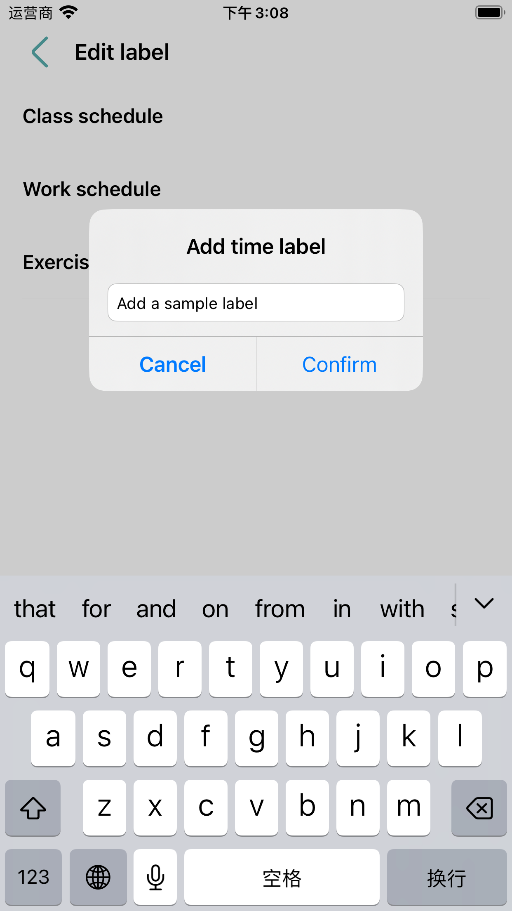
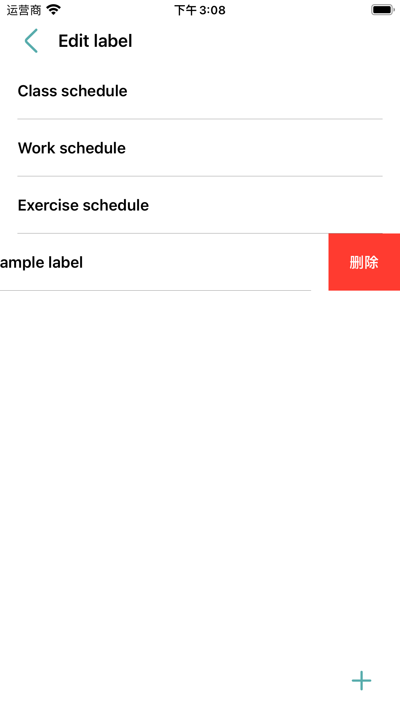
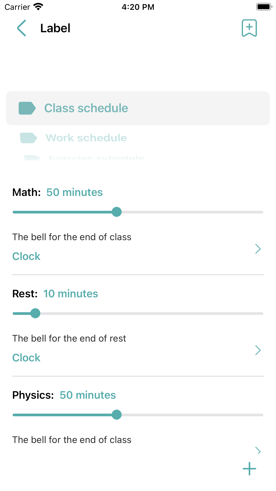
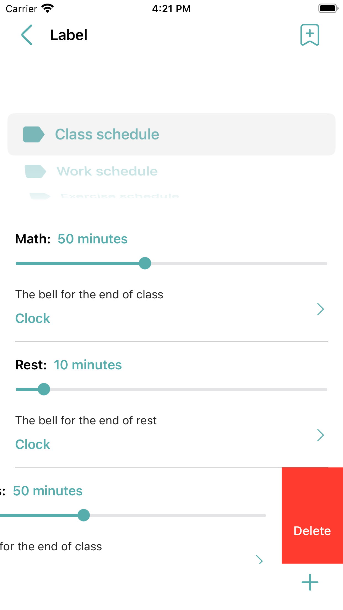
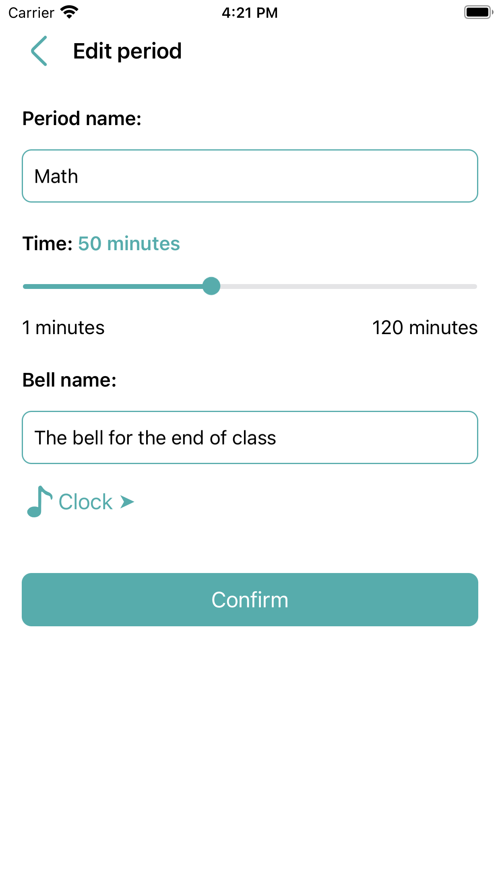
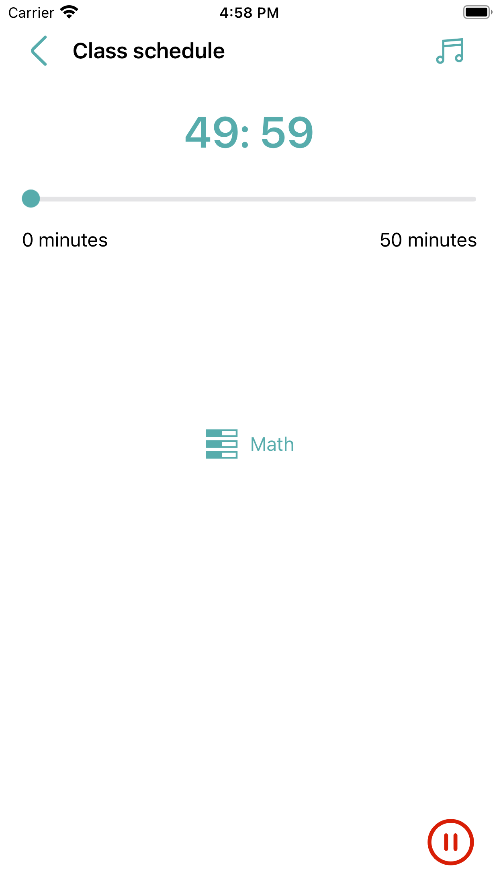

Updated: February 28, 2024
RC EST is a simple, convenient, efficient, ad-free time management tool. Help users resist distractions, focus on the present, and develop good habits. As a time management tool, RC EST has the following advantages:
The labels represent a class of things, and the time under the labels is managed by setting different labels, such as study, work, exercise, etc. On the label page, click the button on the upper right to enter the Edit label page, where you can freely add and delete custom labels:
 A period represents a step in an event, and the label manages a series of periods. For example, "Class schedule" is a label, and math, recess, and physics under the schedule are time periods:
In the label page, left-swipe the entry of the time period to delete the time period, click the entry of the time period to edit the time period, click the button in the lower right corner to add the time period:
 Click the Start button on the home page to enter the start page, which also marks the beginning of this event. On the start page, click the button on the top right to close and play background music; Click the button in the center to view the list of time periods for starting events; Click the button at the bottom right to end the event:
Click the button at the bottom right of the home page to enter the Settings page. On the Settings page, you can view help documents, history, privacy policy, etc. You can also set background music, lock screen status, language and a series of operations.